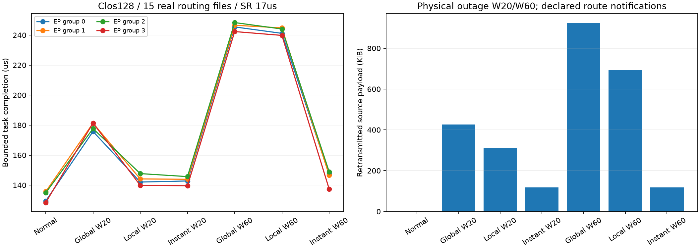
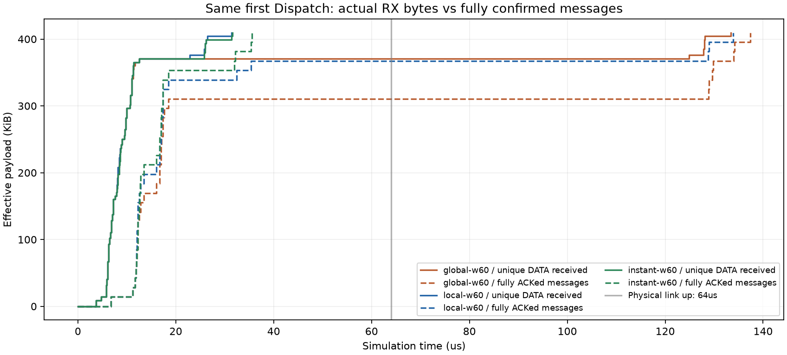

128端点Clos · 15份真实R1专家路由 · 四组EP32 · 两层两个Decode步 · SR始终开启
w20/w60表示中断持续时间；global/local均延迟60µs通知，local立即过滤旧等价出口；instant立即全局更新，是声明的理想参考。
| 条件 | 最晚任务µs | 排空µs | 重传payload B | 丢弃事件 |
|---|---|---|---|---|
| normal | 135.773 | 151.868 | 0 | 0 |
| global-w20 | 181.405 | 197.675 | 435,848 | 64 |
| local-w20 | 147.706 | 147.706 | 318,208 | 46 |
| instant-w20 | 145.711 | 163.100 | 121,176 | 15 |
| global-w60 | 248.362 | 265.280 | 945,944 | 136 |
| local-w60 | 244.806 | 244.806 | 708,736 | 101 |
| instant-w60 | 148.983 | 148.983 | 121,176 | 15 |

同一首Dispatch的29条消息共419,456B。实线统计接收端逐包到达并去重；虚线统计已经完整源确认的消息字节。local-w60全体数据31.380µs到达，全部消息133.846µs才确认。

其中1→65消息26.170µs已到，但ACK在聚合交换机多次丢失：本地剔除后没有原有等价出口。链路64µs上线，发送方120.754µs才再次重传，133.846µs收到确认。恢复后56.754µs等重试＋13.092µs通信＝69.846µs。该确认卡住组1首Dispatch，原门限和缓冲要求均保留。
60µs条件本地策略距正常109.033µs、距即时全局参考95.823µs，均为参考差距，不能当成保证收益。先完善现成的局部绕路与ACK返回路径基线，再检验MoE进度信息是否能提供额外收益；重传、缩短超时或普通绕路本身不是创新。
边界：真实的是专家选择；计算为声明值、内容为功能标记。不是完整671B、现代DeepEP完整执行、硬件校准或128卡满载。七次网络各一次，逐跳108,864次物理发送及5,446条消息源ACK已独立核查；网页仅静态检查，不声明浏览器渲染验收。